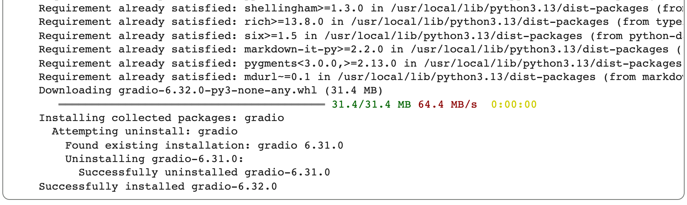
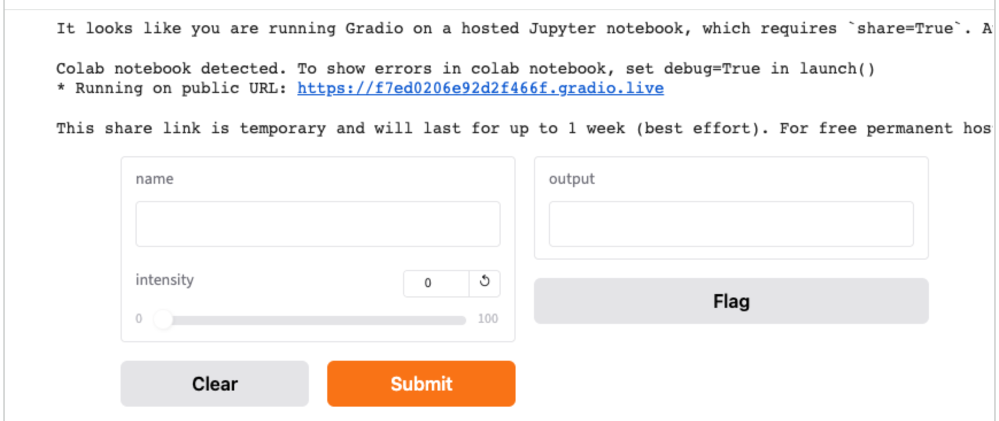
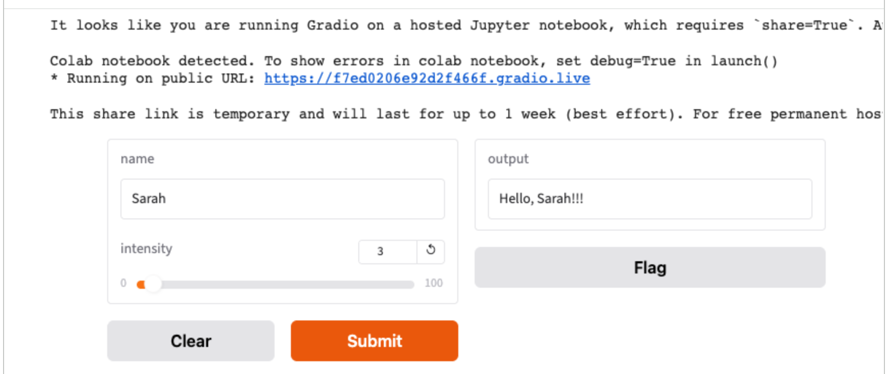
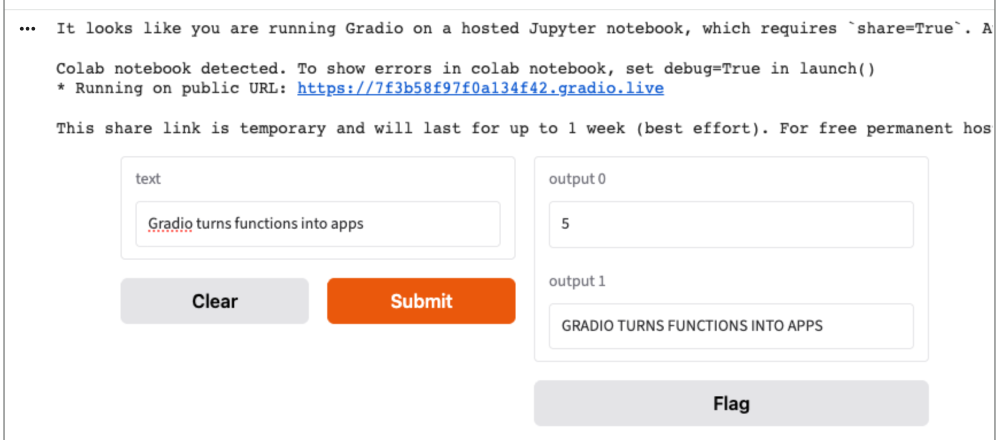
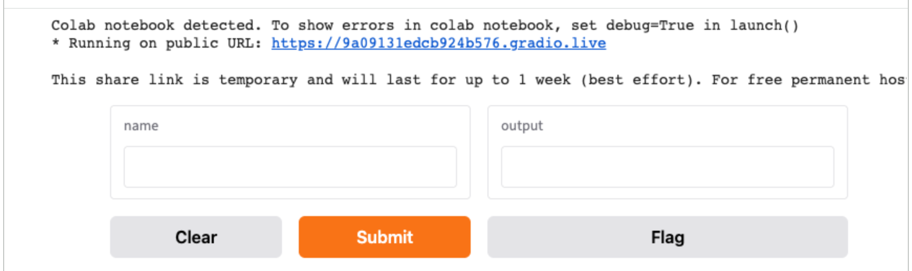
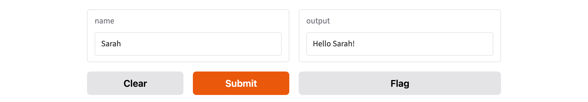
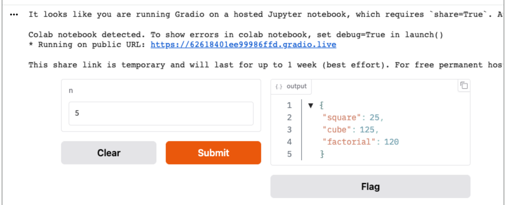

You can refer to this Colab notebook at any time. It includes the full code with each step from installation to advanced examples.
Each app appears right under its cell, inside your notebook.
Before we can build our RAG interface, we need to install Gradio. We recommend installing Gradio using pip, which is included by default in Python. Press Run on the cell under the heading 1. Installing Gradio:
# Run this in a Colab notebook or terminal!pip install --upgrade gradio# 💡 Tip: Use a virtual environment for local installs if you're working locallyWhat this code does:
--upgrade flag ensures you get the latest version with all featuresWhat you'll see in Colab:

(opens the picture full size in a new tab)Colab already comes with Gradio, so most lines say Requirement already satisfied. In the run shown here, pip found Gradio 6.31.0 and downloaded 6.32.0 to replace it. Your numbers may be newer. Wait for the green tick next to the cell, then go on.
Let's write a simple Python function and turn it into a live, interactive app. Press Run on the cell under the heading 2. Your First Gradio Demo:
import gradio as grdef greet(name, intensity): return "Hello, " + name + "!" * int(intensity)demo1 = gr.Interface( fn=greet, inputs=["text", "slider"], outputs="text")demo1.launch()What this code does:
When you run demo1.launch(), Gradio shows us a small web app where we can type a name, move the slider, and see the output. When you run this in a notebook, the UI appears below.
What you'll see in Colab:

(opens the picture full size in a new tab)Above the app, Colab prints a few lines. Automatically setting share=True means Gradio also made a public link for the app, the gradio.live address. You'll use that link in Step 4.
Try typing your name in the textbox on the left, dragging the slider, and then pressing the Submit button. Sarah can greet herself all day.

(opens the picture full size in a new tab)In the run shown here, the name was Sarah and the slider was at 3, so the greeting ends with 3 exclamation marks.
Example: Word Counter + Uppercaser. Let's make a tiny app that takes text, counts the words, and shouts it back in UPPERCASE. Press Run on the cell under the heading 3. Understanding gr.Interface:
def analyze(text): return len(text.split()), text.upper()demo2 = gr.Interface( fn=analyze, inputs="textbox", outputs=["number", "textbox"])demo2.launch()How it works:
Type a sentence in the text box and press Submit.

(opens the picture full size in a new tab)output 0 is the number of words, and output 1 is your sentence in capital letters. One function, two outputs. In the run shown here, the sentence was Gradio turns functions into apps, so output 0 reads 5.
Once you're ready to show off your app, simply add share=True in launch. Press Run on the cell under the heading 4. Sharing Your Gradio App:
def greet_public(name): return "Hello " + name + "!"demo3 = gr.Interface( fn=greet_public, inputs="textbox", outputs="textbox")demo3.launch(share=True) # 🚀 One line = public linkWhat this code does:
greet_public is a smaller greet function: one name in, one greeting out.demo3.launch(share=True) starts the app and asks Gradio for a public link.What you'll see in Colab:

(opens the picture full size in a new tab)Click the gradio.live link in the output. Your app opens in a new browser tab, like a normal website:

(opens the picture full size in a new tab)Anyone with this link can use your app while your notebook is running, for up to 1 week.
Skip sections 5 and 6 for now: you'll run them in the next reading.
They build a chat window, which is the next reading's topic. Under them is a cell called Sample Solution. Don't run it yet: it's the answer to the practice on the next slides.
You've learned the basics of building and sharing a Gradio app. Now it's time to make something simple: a little web app that turns one number into its square, cube, and factorial.
Your Task
Build a Gradio app that:
This is practice, so there's nothing to hand in. You'll check your app against the sample solution at the end.
gr.Number (component) or "number" (quick string format)share=True to your launch() method so you can try your app on your phone or share the linkHint: Python's built-in math.factorial() does the factorial part for you, no need to code it manually. Just remember to import math first!
Write your code in a new code cell above the Sample Solution heading: hover just above that heading and click + Code.
This task might look small, but it packs in three key skills: creating input/output components in Gradio, returning multiple values in a clean format, and sharing your app with the world. If you can build this, you can build calculators, converters, and other micro-apps just as easily.
Now scroll down and run the Sample Solution cell to compare:
import gradio as grimport mathdef calculate(n): return { "square": n ** 2, "cube": n ** 3, "factorial": math.factorial(int(n)) }demo = gr.Interface( fn=calculate, inputs="number", outputs="json")demo.launch()
(opens the picture full size in a new tab)Type the same number into both apps. If your three results match the sample solution's, you're done. Your output can look different, a list instead of a dictionary, and still be right.